| 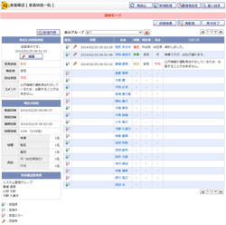 |
安否状況一覧
安否確認にて配信されたユーザの安否状況が確認できます。 |
|---|---|
| 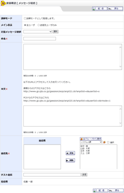 |
メッセージ配信
・
確認
安否確認を行うために、ユーザにメッセージを配信します。 |
| 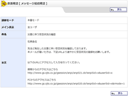 |
配信内容確認
安否確認にて各ユーザに配信されたメッセージ内容が確認できます。 |
| 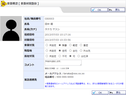 |
安否状況登録
・
確認
各ユーザ、または代理者が安否状況を回答します。 |
| 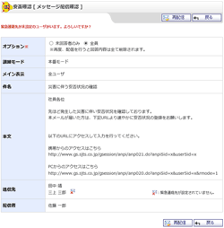 |
メッセージ再配信
ユーザに対して再度メールを配信します。 |
 |
管理者設定メニュー
安否確認に関する管理者設定を行います。 |
| 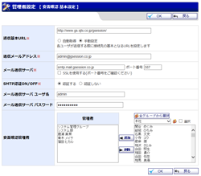 |
基本設定
・
確認
安否確認の基本的な設定を行います。 |
| 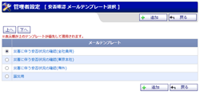 |
メールテンプレート管理
安否確認配信時に使用するメールテンプレートの追加、編集ができます。 |
| 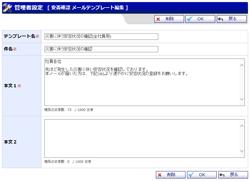 |
メールテンプレート登録
・
確認
安否確認配信時に使用するメールテンプレートを登録します。 |
| 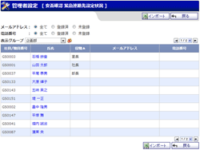 |
緊急連絡先設定状況
各ユーザの緊急連絡先設定状況を確認し、連絡先を編集できます。 |
| 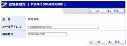 |
緊急連絡先登録
・
確認
各ユーザの緊急連絡先設定内容を編集します。 |
| 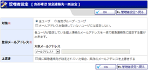 |
緊急連絡先一括設定
・
確認
緊急連絡先の一括を設定します。 |
| 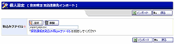 |
緊急連絡先インポート
・
確認
各ユーザの緊急連絡先設定内容を一括インポートします。 |
| 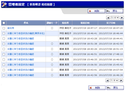 |
配信履歴
過去に行われた配信履歴を閲覧、削除できます。 |
| 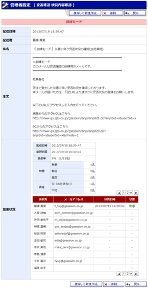 |
配信履歴 詳細参照
安否確認の配信内容の詳細を閲覧できます。 |
| 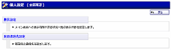 |
個人設定メニュー
安否確認に関する個人設定を行います。 |
| 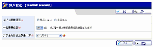 |
表示設定
・
確認
メイン画面への表示有無、安否状況一覧の表示件数と、デフォルト表示グループの設定します。 |
| 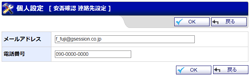 |
緊急連絡先設定
・
確認
各個人の緊急時の連絡先を編集します。 |